Jawaharlal Nehru
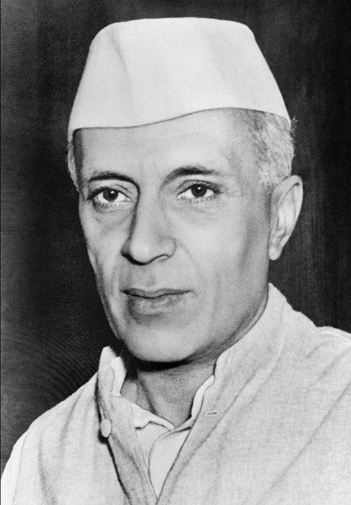Jawaharlal Nehru
political parti =Indian National Congress
Gulzarilal Nanda
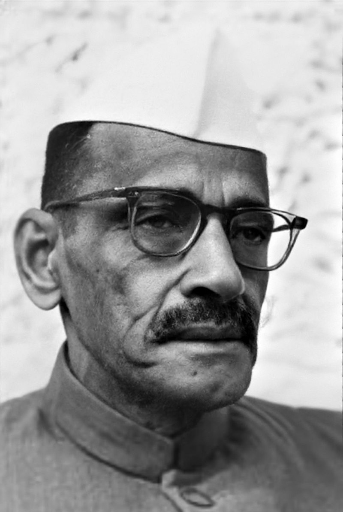Gulzarilal Nanda
political parti =Indian National Congress
Lal Bahadur Shastri
.jpg)
Lal Bahadur Shastri
political parti =Indian National Congress
Gulzarilal Nanda
Gulzarilal Nanda
political parti =Indian National Congress
Indira Gandhi
.png)
Indira Gandhi
political parti =Indian National Congress
Morarji Desai
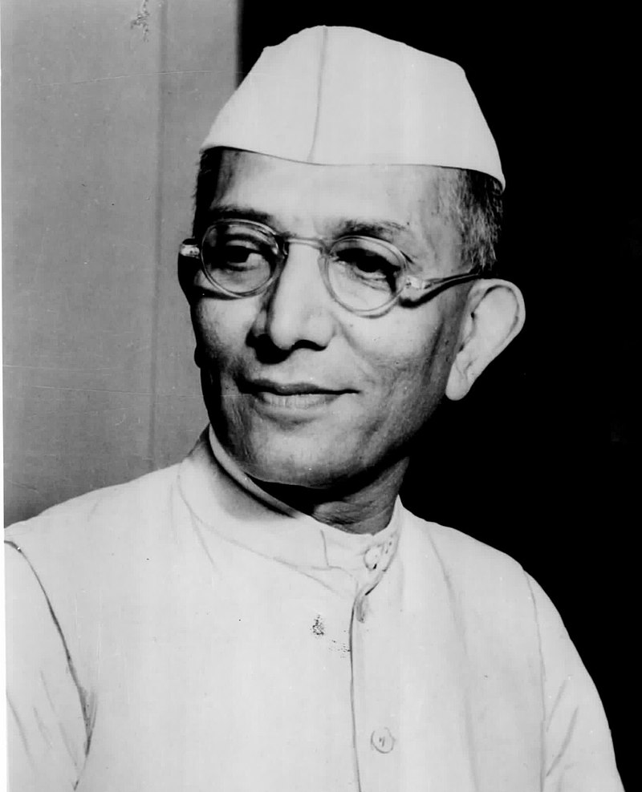Morarji Desai
political parti =Janata Party
Charan Singh
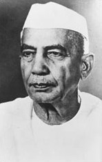Charan Singh
political parti =Janata Party(secular)
Indira Gandhi
Indira Gandhi
political parti =Indian National Congress (I)
Rajiv Gandhi
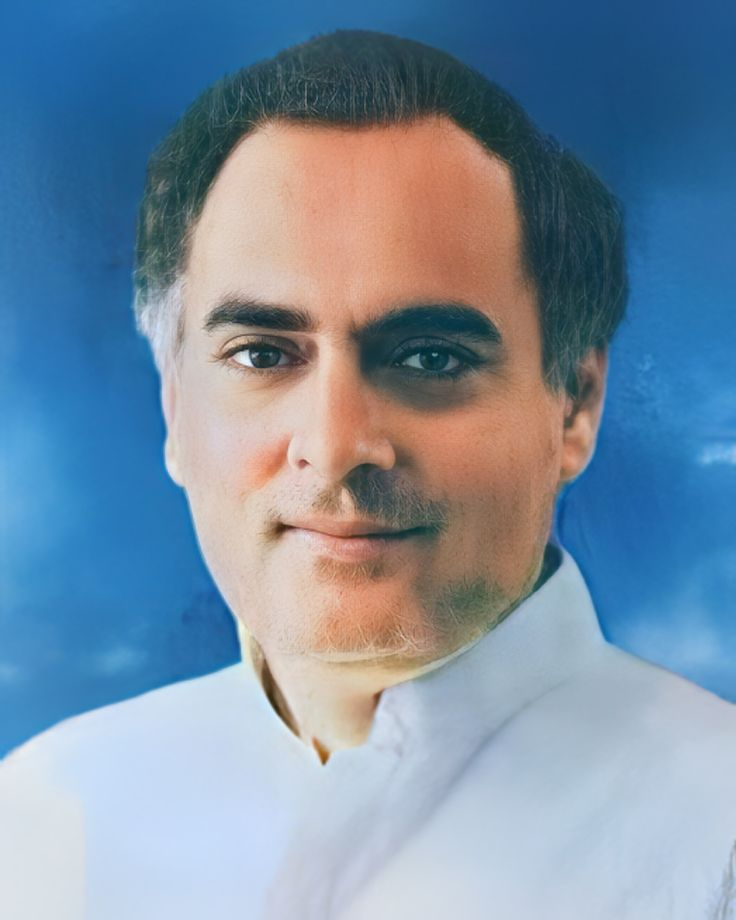Rajiv Gandhi
political parti =Indian National Congress (I)
Vishwanath Pratap Singh
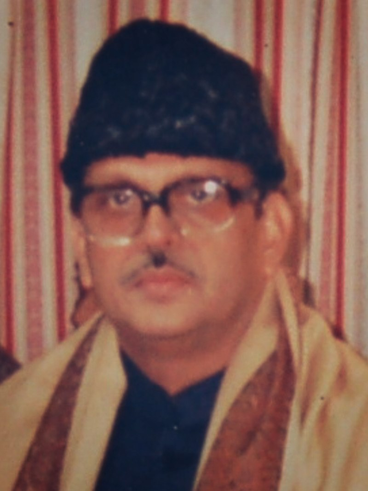Vishwanath Pratap Singh
political parti =Janata Dal
Chandra Shekhar
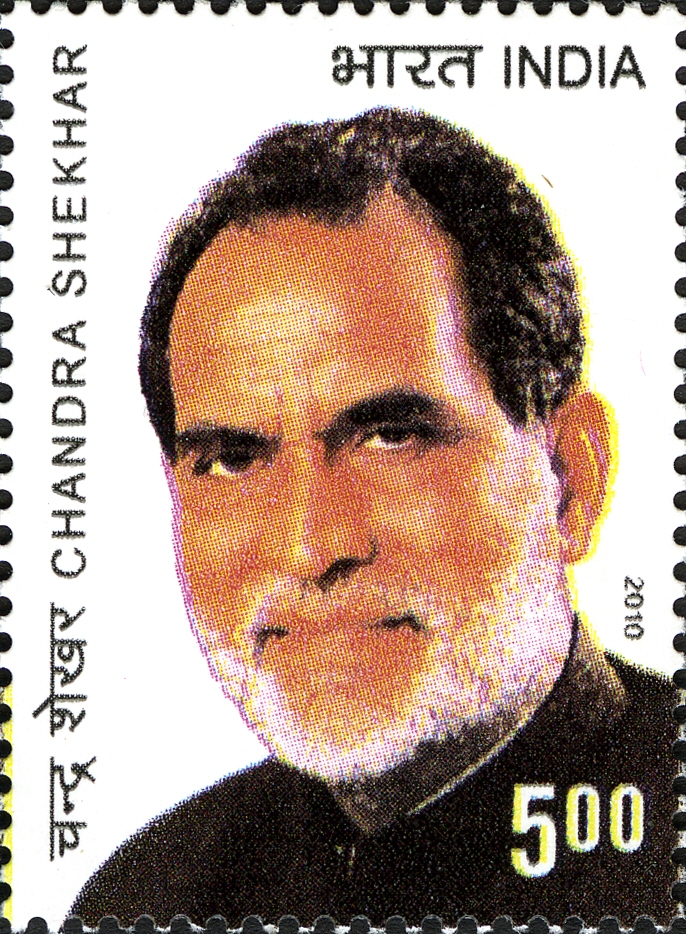Chandra Shekhar
political parti = Samajwadi Janata Party (Rashtriya)
P. V. Narasimha Rao
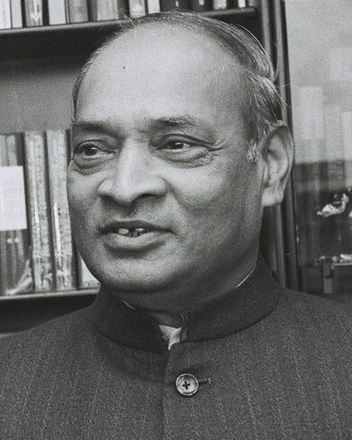P. V. Narasimha Rao
political parti = Indian National Congress (I)
Atal Bihari Vajpayee
 (1).jpg)
Atal Bihari Vajpayee
political parti =Bharatiya Janata Party
H. D. Deve Gowda
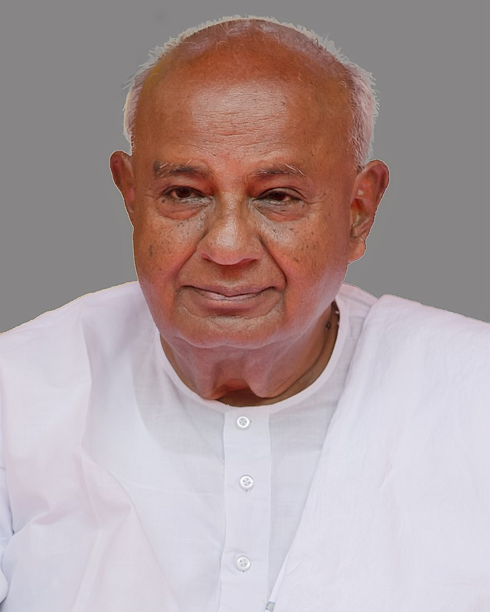H. D. Deve Gowda
political parti =Janata Dal (United Front)
Inder Kumar Gujral
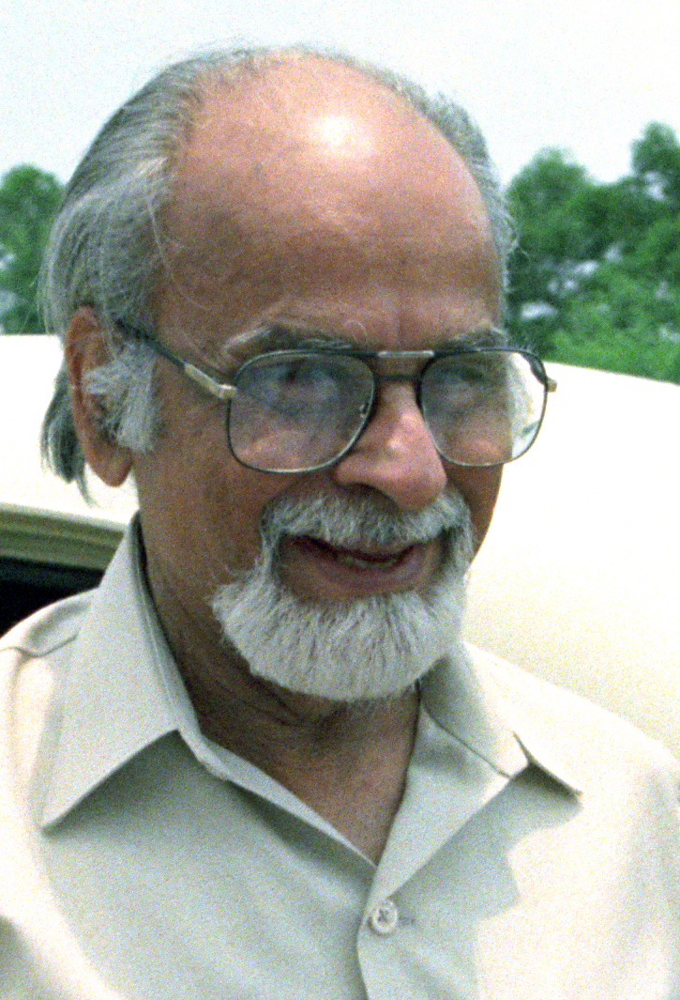Inder Kumar Gujral
political parti =Janata Dal (United Front)
Atal Bihari Vajpayee
Atal Bihari Vajpayee
political parti =Bharatiya Janata Party(NDA)
Manmohan Singh
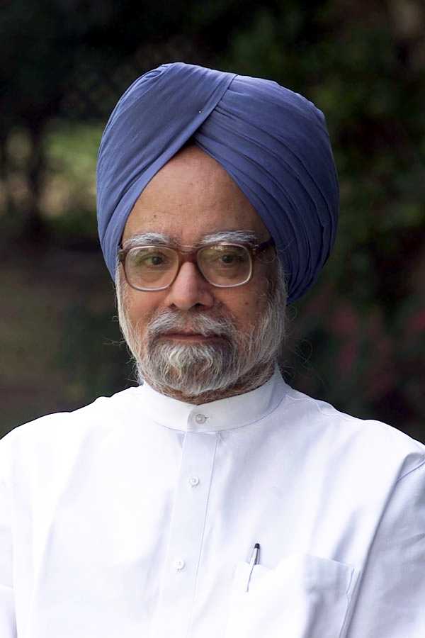Manmohan singh
political parti =Indian National Congress (UPA)
Narendra Modi
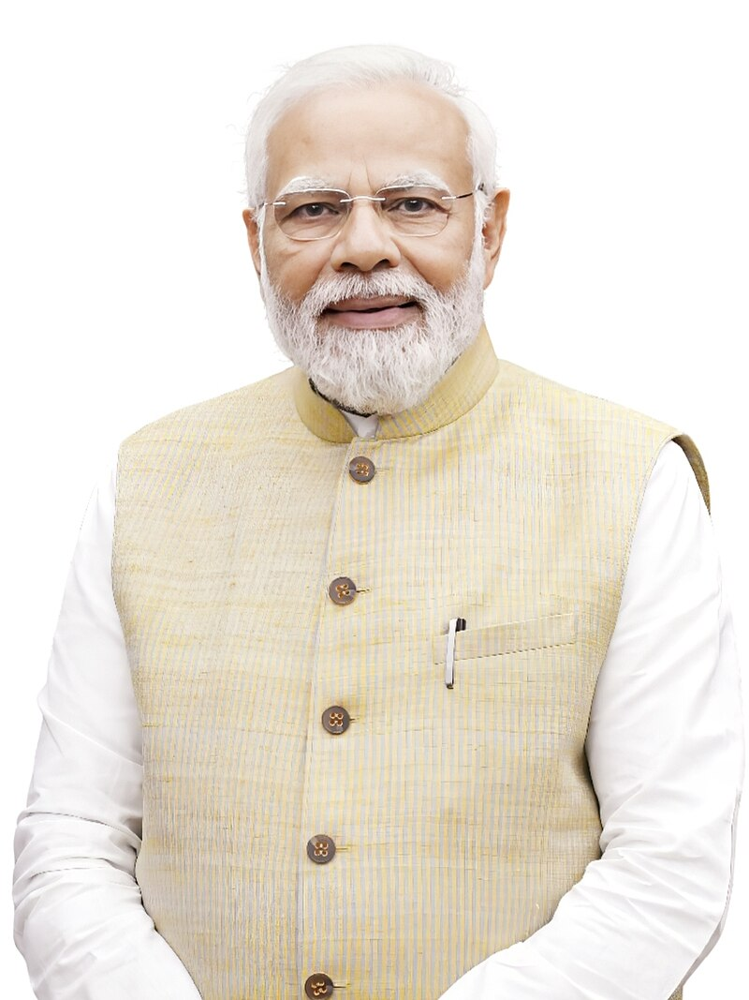narender modi